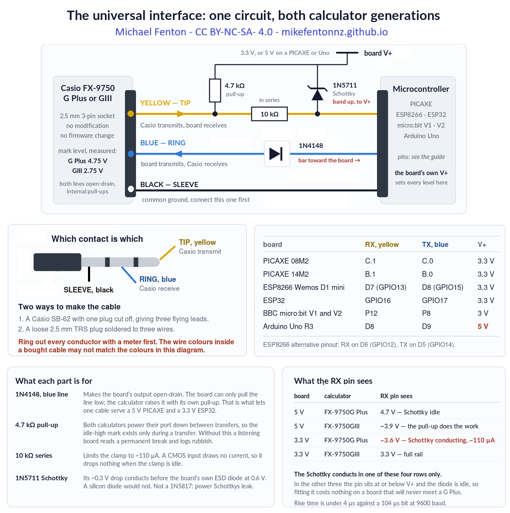
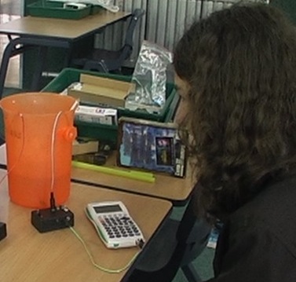
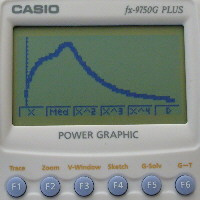
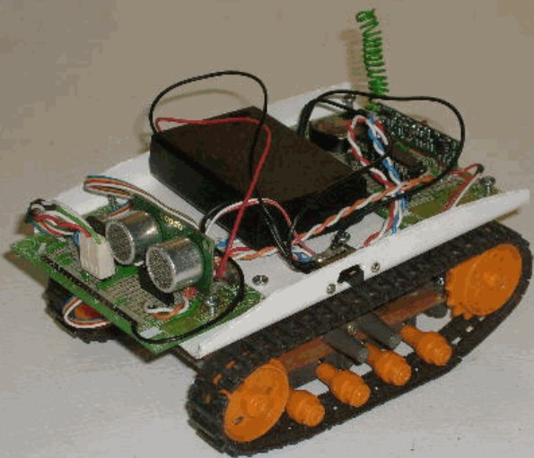
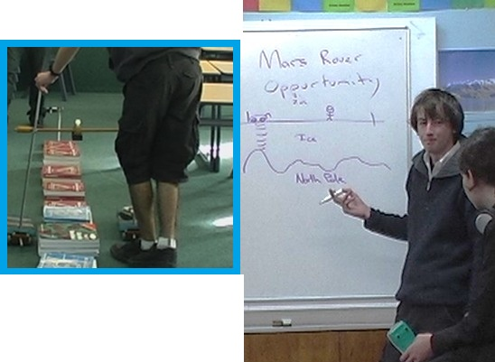
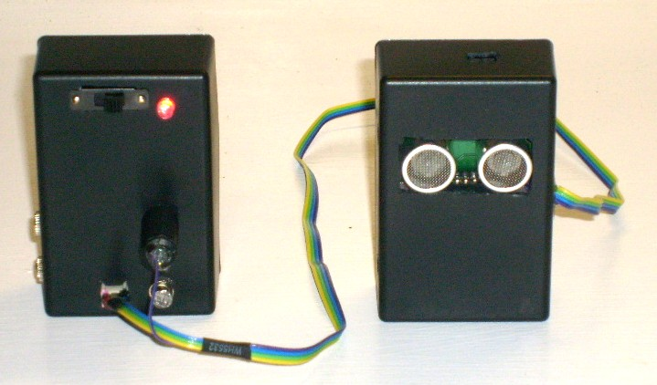
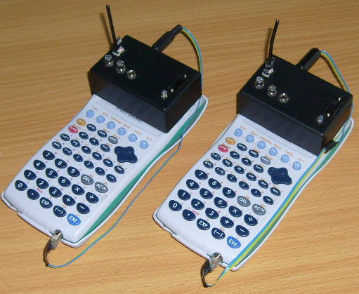

PICAXE 08M2 and 14M2
The cheapest Casio data logger - $4 chip, homemade sensor, BASIC (free)
← Casio calculator data logger – project overview
What if a calculator many students already own, or can buy second hand for $10, could be transformed into a general purpose tool for physical education, health, science, mathematics, Internet-of-things (IoT), and robotics / instrumentation?
The forgotten feature in the 2.5 mm port of a Casio FX-9750 and FX-9860 is now available on my GitHub, open-source and free. It takes the burden off the teacher, because the learners become the experts - constructing, coding and repairing their own smart data logger that also acts as a remote control, a PIN pad, and automation control interface.
This is an extension of my 2008 research, which carried classroom validation and student feedback, now with a modern facelift for the Picaxe family of microcontrollers. Learners can record heart rate, temperature, sound level, and other readings using sensors they build themselves, for cents or a few dollars.
The calculator needs no modification or firmware change. It does not need to know what is on the other end of the cross-over cable.
The cheapest way in. A PICAXE 08M2 is a single 8-pin chip that costs a few dollars, needs no development board, and is programmed in BASIC from a free editor. It was the platform the original 2007 datalogger was built on, and it is still the one to start a class on.
Before you wire anything
Check the wiring of every conductor with a multimeter first. The wire colours inside a bought SB-62 cable may not match the colours in any diagram, including this one. Check the tip, ring and sleeve against your own cable before connecting a calculator.
What you need
- PICAXE 08M2 (8 pins, three sensor channels) or PICAXE 14M2 (more pins, same code).
- A calculator: FX-9750G Plus or FX-9750GIII. Both are supported by one program.
- The four interface components below, and a 2.5 mm TRS socket or a cut SB-62 cable.
- A supply, 3.3 V or 5 V – and the choice matters. A PICAXE runs happily on either. At 3.3 V the pull-up goes to 3.3 V, and an FX-9750G Plus will present 4.75 V to the input pin, so the 10 kΩ and the Schottky below are doing real work. At 5 V – a PC USB port, for instance – the pull-up goes to 5 V, nothing exceeds the supply, and the Schottky sits idle. Either way the pull-up goes to whatever the chip is running on, never to a fixed rail.
- PICAXE Editor – free, Windows, and there is a browser-based editor too.
The interface circuit
Four components, and the same circuit on every platform. It serves both calculator generations and both board supply voltages.

- 1N4148 in the blue wire, band toward the board. This makes the board's output open-drain: it can only pull the line low, and the calculator raises it with its own internal pull-up. That is what lets one cable serve a 5 V board and a 3.3 V one.
- 4.7 kΩ pull-up from the yellow wire to the board's own supply. Both calculators power their port down between transfers, so a board that is listening reads a permanent break without it.
- 10 kΩ in series with the receive pin, and a 1N5711 Schottky from that pin to the board's supply, band toward the supply. These two matter whenever the board's supply is below the calculator's transmit level – which on this platform means a PICAXE running at 3.3 V with an FX-9750G Plus, whose line sits at 4.75 V. Without them that 4.75 V goes into the chip's own protection diode. Run the PICAXE at 5 V, or use an FX-9750GIII, and the Schottky never conducts – but it costs nothing to fit, and fitting it once means the same interface works with either calculator and either supply.
- The 10 kΩ is in series only. Nothing connects the receive pin to ground. A resistor there makes it a divider, which drops a GIII's 2.75 V mark to about 1.8 V and stops working.
Pins
| Signal | PICAXE 08M2 | PICAXE 14M2 |
|---|---|---|
| To Casio RX – blue, ring, via the 1N4148 | C.0 | B.0 |
| From Casio TX – yellow, tip, with the pull-up | C.1 | B.1 |
| Sensor 1, analogue | C.2 | B.2 |
| Sensor 2 | C.3 (digital) | B.3 (analogue) |
| Sensor 3, analogue or DS18B20 | C.4 | B.4 |
| Ground – black, sleeve | 0 V, connect this one first | |
C.1 is the hardware serial input, not an arbitrary choice. The receive pin has to be the one the EUSART owns.
The code
Casio-NSN-08M2.basandCasio-NSN-14M2.bas– one sensor value perReceive(call, up to three channels. Both tested on both calculator generations.Casio-HMI-08M2.bas– the calculator as a keypad and display for the chip.
Two settings in the source are important:
setfreq m16 ; 16 MHz - needed for clean 9600 baud
hsersetup B9600_16, %00 ; %00 = true polarity, idle highThree requirements apply to every platform. They are why this works at all, and each of them was found by a link that would not run without it.
- Idle between bytes. An FX-9750G Plus needs roughly one bit period – about 104 µs at 9600 baud – of idle line between one byte and the next. A second stop bit supplies it; so does a deliberate delay. An FX-9750GIII does not care.
- A turnaround delay. About 5 ms before every transmission, so the calculator can switch its port from sending to listening. Without it the calculator answers
0x22and never sends its request packet. On a PICAXE you get this for free – the shipped code setssymbol TURNAROUND = 0and works on both calculators, because the interpreter is slow enough to supply the pause by itself. If you ever do see a Com ERROR here, set it to 20, which is 5 ms at 16 MHz. - Build the packet, then send it. Nothing computed part-way through a transmission – a checksum between the last two bytes will insert a pause a G Plus refuses.
What goes wrong
Never send a packet with a single multi-byte hserout
The EUSART is 8N1 only and has no second stop bit to offer. A block hserout hands the hardware the whole packet and the bytes leave back to back, with no idle between them – which an FX-9750G Plus refuses. The shipped code emits one byte at a time through a put_byte routine, and the interpreter's own per-byte cost is comfortably more than one bit period. That is the entire fix, and it costs nothing in practice because a fifty-byte packet still takes about fifty milliseconds either way.
Other things worth knowing
pause 300, not 200, after reading the request-packet header. 200 works on a GIII and fails on a G Plus; 300 keeps one program compatible with both.- The calculator must stay connected for the whole run. A PICAXE has nowhere to store readings on its own.
- A noisy 5 V USB supply causes Com ERRORs that look exactly like a wiring or protocol fault. Battery or laptop USB is reliable.
Code, technical and teaching manual and the other platforms
- Repository, all platforms: github.com/MikeFentonNZ/Casio-calculator-datalogger-picaxe-esp-microbit-arduino
- Technical manual – wiring, the full
Receive(sequence, every packet and checksum: https://doi.org/10.5281/zenodo.22095227 - Project overview: Casio calculator data logger – the $10 upgrade
WARNING - TAKE CARE!
NEVER connect mains electricity (240 V / 110 V) to the calculator, to the microcontroller, or to any sensor wiring.
NEVER use mains-connected equipment near water.
Keep every sensor signal within 0 V to 3.3 V. The ESP32 and ESP8266 are not 5 V tolerant. A bare ESP8266 A0 pin reads 0 to 1.0 V only; 3.3 V will destroy it. However, popular development boards like NodeMCU and Wemos D1 Mini include an onboard resistor voltage divider, which safely extends their external board tolerance to 0 to 3.2V–3.3V
Special Warning: DO NOT let students test boiling water.
There is no need to calibrate temperature sensors using boiling water. Where in the real world would a student expect to record that temperature? If you are investigating cooling curves, YOU should safely get sensor readings at 100 °C and PROVIDE THIS to learners.
READ THE DISCLAIMER in the Technical manual - No responsibility is taken for how you use this information! This is a research project provided open-source to educators.
Use it
Always remind learners that scientists and engineers work carefully and safely, no matter what they see in movies or TV.
Crime scene investigation: Make your own temperature sensor using a 50 cent NTC thermistor. Then test it by calibrating it (see the photo). Use it to investigate cooling curves - how long has the victim's coffee been cooling?


Casi the Casio calculator controlled robot: The original Casio calculator-controlled robot. The Casio sends calculator key presses by radio to the robot (see the 2008 E-Learning report https://doi.org/10.5281/zenodo.19302276).

Mars surface surveyor: Attach a low-cost ultrasonic rangefinder module (Aliexpress) and map a simulated Martian surface from the air (see the 2008 E-Learning report https://doi.org/10.5281/zenodo.19302276).


Human-machine-interface: The calculator transmits user-entered numerical values to the microcontroller via the serial interface. The calculator’s tamper-evident keypad and display provide a secure input mechanism for applications requiring user-generated discrete values. One group sets up a model door lock with a 4-digit PIN and no lockout. A second group is asked to open it without being told the code. Teaches coding, cyber security, building systems safety, and the rule 'the secret belongs with the thing being protected, not with the thing a user is holding'.
IMC simulator: The Casio calculator and connected microcontroller form a closed-loop measurement and control system. The microcontroller reads one or more sensors, transmits them to the calculator for display. The student observes the live readings, makes a control decision, and transmits a control value back to the microcontroller via the calculator keypad. The microcontroller receives that value and adjusts a physical output accordingly; motor speed, heater power, valve position, or light intensity. The student then observes the effect of their intervention in the next sensor reading.
Over distance. A 433 MHz radio link has been proven. Use wireless remote control or wireless sensors.

A renewed justification in a post AI-era.
When technology cost and availability is no longer a consideration, the use of simulated data for STEM learning is a decision that now requires justification, rather than being the default.
The original case for this work was equity: timed data logging for a few dollars instead of hundreds. There is now a second reason it matters. As generative AI is trained on a scientific literature increasingly polluted by fabricated paper mill studies (Richardson and Amaral, 2025, PNAS), simulated datasets can no longer be assumed to reflect physical reality. Subverting the Casio serial protocol so learners can gather their own first-hand measurements gives them data whose provenance is transparent and which can still surprise. The exploit is no longer only about cost; it is about preserving access to real, trustworthy observation.
Other platform build guides: BBC micro:bit · ESP8266 · ESP32 · Arduino Uno · Casio calculator Hasbro Smart R2D2 DoidX app